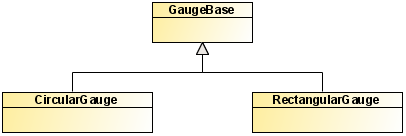
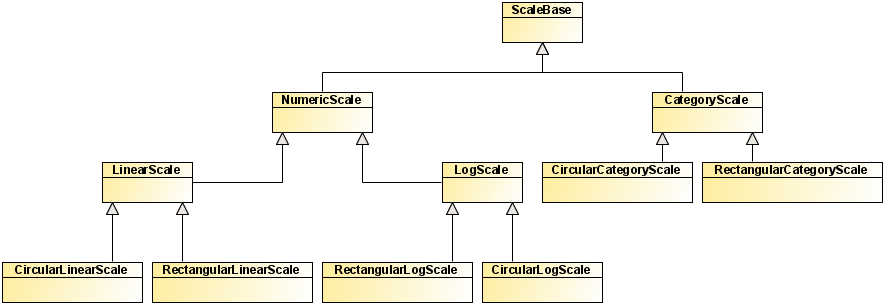
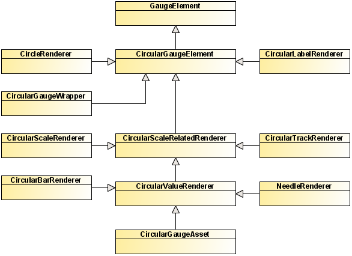
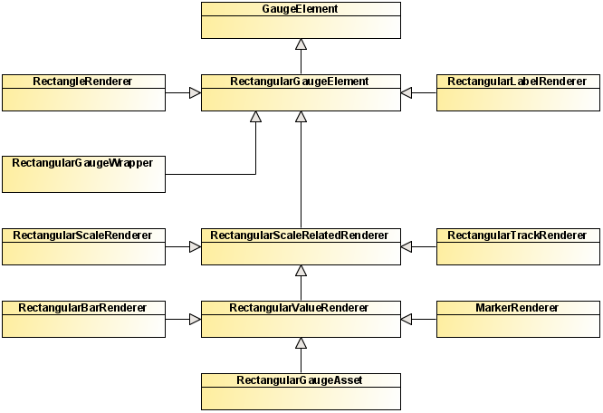
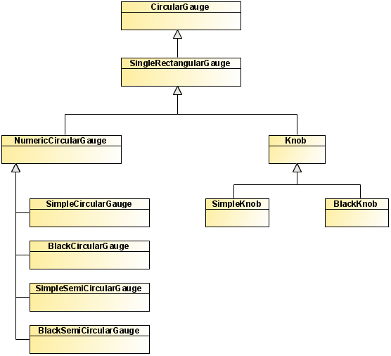
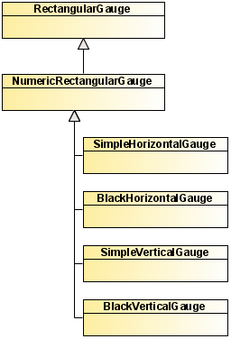

The architecture of the gauge components can be broken
down into three categories of classes: the classes of the framework,
the classes of the predefined circular gauges, and the classes of
the predefined rectangular gauges. The following UML diagrams show
the relationships between the classes within each category.
Classes of the gauges framework
Gauges framework classes are composed of: base classes,
gauge scales classes, and visual elements classes for circular and
rectangular gauges.
- Base classes
The framework is designed so that a
gauge is defined by a set of logical scales and a set of visual elements.
These properties are defined on the GaugeBase class.

The
CircularGauge and
RectangularGauge subclasses manage the specificities
of each type of gauge, including the layout of the various visual
elements.
- Gauge scale classes
The following diagram shows the logical
scales hierarchy of the framework. There are base classes common to
circular and rectangular gauges, as well as specific classes.

A scale defines the logical model of a gauge. It defines
which values are acceptable for the scale: either from a minimum to
a maximum for
NumericScale subclasses, or from a set of values for
CategoryScale subclasses. Scales are used by some visual elements
to make sure they render correctly according to their scale.
- Visual elements classes for circular and rectangular
gauges
The following diagram shows the hierarchy
of the visual elements for circular gauges.

The following diagram shows the hierarchy of the visual
elements for rectangular gauges.

All elements inheriting from
CircularScaleRelatedRenderer or
RectangularScaleRelatedRenderer need a scale to render correctly.
If no scale is set on such a visual element, the first element of
the scale array of the gauge is used. Elements that relate to the
scale are elements that need to render a scale (for example, ticks)
or something that represents the scale value. Other types of elements
do not rely on the scale because they do not need the scale (for
example, decorations, labels).
Classes of the predefined circular gauges
The following diagram shows the predefined circular gauges
classes.

Classes of the predefined rectangular gauges
The following diagram shows the predefined circular gauges
classes.
